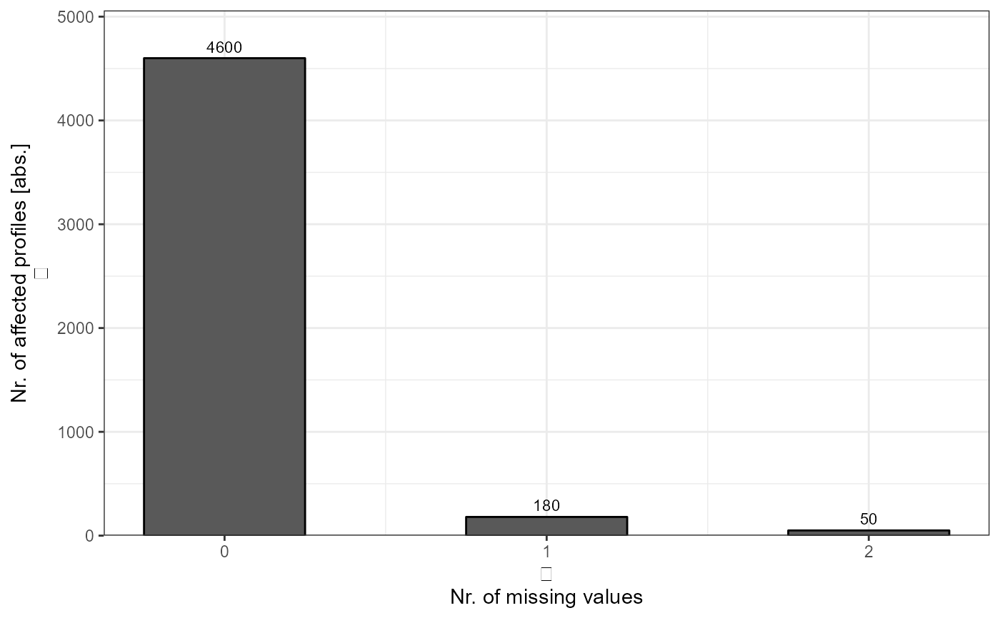

Individual Barplots - Data Completeness
plot_DC_barplot.RdPlot number of identifications per missing values for each analysis.
Arguments
- input_list
A list with data frames and respective level information.
- level
Character string. Choose between "Precursor.IDs", "Peptide.IDs", "Protein.IDs" or "ProteinGroup.IDs" for corresponding level. Default is "Precursor.IDs".
- label
Character string. Choose between "absolute" or "percentage". Default is "absolute".
Details
For each submitted individual analysis a detailed barplot is generated with information about the number of achieved identifications per missing values.
Examples
# Load libraries
library(magrittr)
library(comprehenr)
library(tibble)
# Example data
data <- list(
"A" = tibble::tibble(
Analysis = c("A", "A", "A"),
Nr.Missing.Values = c(2, 1, 0),
Precursor.IDs = c(50, 200, 4500),
Peptide.IDs = c(30, 190, 3000),
Protein.IDs = c(20, 40, 600),
ProteinGroup.IDs = c(15, 30, 450),
Profile = c("unique", "shared with at least 50%", "complete")
),
"B" = tibble::tibble(
Analysis = c("B", "B", "B"),
Nr.Missing.Values = c(2, 1, 0),
Precursor.IDs = c(50, 180, 4600),
Peptide.IDs = c(50, 170, 3200),
Protein.IDs = c(20, 40, 500),
ProteinGroup.IDs = c(15, 30, 400),
Profile = c("unique", "shared with at least 50%", "complete")
)
)
# Plot
plot_DC_barplot(
input_list = data,
level = "Precursor.IDs",
label = "absolute"
)
#> $A
#>
#> $B

#>